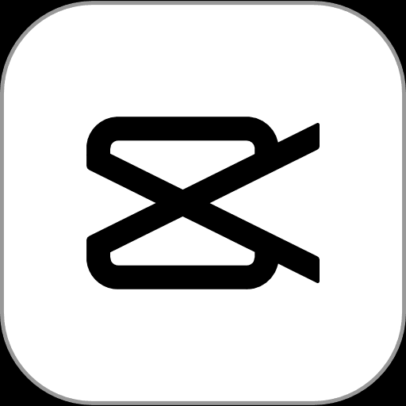

Capcut
Video & EdiciónContexto e Información General
Capcut es una aplicación de edición de video que permite crear contenido visualmente atractivo de manera sencilla y rápida.
Principales Funcionalidades
- Edicion Automática: Subtítulos automaticos, recorte y efectos con IA.
- Plantillas Virales: Miles de plantillas listas para tiktok y reels.
- Efectos y Transiciones: Filtros, música, stickers y transiciones profesionales.